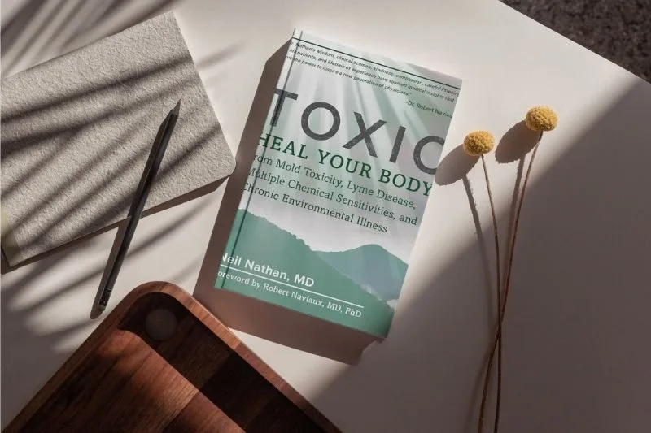
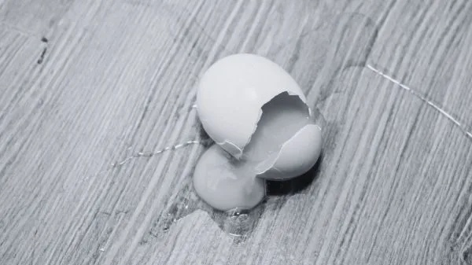

從黴菌毒素看身體健康

最近 黴菌 在社群媒體是一個備受關注的話題，身為住在台灣海島國家的一員，我們對「發霉」這件事幾乎已經習以為常，大家常誤以為黴菌頂多就是讓浴室牆角變黑，或是引起香港腳、打噴嚏這類皮毛小事。今天我想特別整理一本重量級好書 《Toxic》 裡的精華觀點，作者 Neil Nathan 醫師 擁有 40 至 50 年的臨床經驗，是治療黴菌毒素與複雜慢性病的權威。因為這本書還沒有中文譯本，所以我們利用一點簡短的時間，深入了解黴菌到底對我們的健康造成了什麼深遠影響。
真正讓人生病的並不是傳統醫學擔心的「黴菌感染」，我們真正要對抗的，是黴菌為了生存競爭所釋放出的生化武器，也就是 黴菌毒素中毒（Mycotoxin Toxicity）。這些肉眼看不見的毒氣，它們屬於 離子載體（Ionophores），親油的特性讓毒素能輕易穿透細胞膜，甚至直達大腦，直接「毒害」你的解毒系統。試想一下，台灣長年濕度都在 70% 以上，加上現代建築通風不良，我們的房子很容易就變成毒素溫床。這就是為什麼很多人明明離開了發霉環境，身體卻依然深陷在慢性發炎與 細胞危險反應（Cell Danger Response） 的泥淖中無法自拔。
最困擾人的是這些症狀不容易察覺，當患者鼓起勇氣向醫師描述症狀時，得到的卻是困惑的眼神，或是被轉診去身心科。作者 Nathan 醫師的書中精準地描繪了這些被視為「無病呻吟」的真實痛苦：你是否曾經歷過一種突如其來的 冰鑽般的刺痛感（Ice Pick-Like Pains），那種痛就像閃電一樣尖銳？又或者，你發現自己變成了「人體發電機」，指尖碰到門把或金屬時，會產生異常強烈的 靜電電擊感（Electric Shock Sensations）？這其實不是巧合，而是黴菌毒素干擾了體內的電解質平衡，讓汗腺排出了過多的鹽分所致。更令人費解的是，這種毒害會直接影響大腦的情緒中樞，造成 生理性焦慮（Physical Anxiety）。因為毒素讓你的大腦杏仁核發炎腫脹，導致 邊緣系統（Limbic System） 長期處於過度警戒的狀態，讓你對光線、聲音甚至微量的化學氣味都變得 極度敏感（Exquisitely Sensitive）。
來到這裡，我們必須觸碰一個最核心的問題：「為什麼我的身體會卡在這種狀況中？」很多病人常自責意志力不夠，或者吃補品沒效是因為吸收差。其實，你的身體非常聰明，當 粒線體（Mitochondria） 偵測到黴菌毒素這種生物威脅時，它會啟動 細胞危險反應（Cell Danger Response, CDR），主動切斷能量供應。你可以想像，就像一個國家遭遇困難時，會立刻切斷民生用電，把所有資源轉去製造武器（發炎反應）一樣。這時候的粒線體從原本的「發電廠」變成了「戰士」，它刻意關閉了甲基化等修復功能，目的是不讓敵人利用這些養分壯大。這完美解釋了為什麼你總是覺得極度疲倦，而且越補越糟，因為在身體還沒解除警報之前，強行補充營養品或做排毒治療，身體絕對會反抗。唯有確認威脅解除，身體的代謝循環才會回復到正常。
談到治療，有個觀念非常重要。很多病人一聽到身體有毒，直覺反應就是「排排排」，急著吃抗黴菌藥、狂做桑拿或打排毒針。但這其實是臨床上最危險的動作。請記住作者 Nathan 醫師的核心鐵律：在你的 排水通道（Drainage Pathways） 暢通之前，絕對不要輕易去驚動毒素。如果你的肝臟、腸道和淋巴系統正處於「塞車」狀態，這時候我們需要的是一位交通警察，也就是 黏合劑（Binders），這也是為什麼我常建議大家在斷食的時候，可以適度補充小球藻或是活性碳的原因。作者 Nathan 醫師利用活性碳、沸石或特定藥物，在腸道裡緩慢地吸住那些隨著膽汁排出的毒素，阻斷 腸肝循環（Enterohepatic Circulation），防止毒素被身體「資源回收」。而在這過程中，請把「No Pain, No Gain」這句話徹底忘掉。坊間常說吃了藥會不舒服是排毒的「好轉反應」，但在功能醫學眼裡，這其實是 赫氏反應（Herxheimer reaction），是 治療失敗的訊號，代表你釋放毒素的速度遠快過身體能排泄的速度。所以，我們寧願從極微小的劑量，甚至只有 1/16 茶匙 開始，也不要讓你的身體多受一點苦。這是一場比氣長的修復，慢，才是真正的快。
我們常會遇到一個令人沮喪的現象：明明檢驗報告顯示毒素都清除了，但你的焦慮、疼痛甚至那種莫名的電流感卻依然存在。這其實是 幽靈疾病（Phantom Illness），是大腦神經迴路卡在「高警戒模式」的結果，就像小偷走了，警報器卻短路關不掉一樣。這時候，繼續吃排毒藥是沒用的，我們需要的是進行一場大腦的「軟體重灌」，也就是書中極力推崇的 動態神經重塑系統（DNRS）。
這聽起來很深奧，你可能會想：「我是不是需要買什麼高科技儀器？」其實完全不用。DNRS 更像是一套每天都要做的「大腦物理治療」。它的核心原理是利用 神經可塑性（Neuroplasticity），透過一系列結構化的心智練習來「欺騙」大腦。簡單來說，當你發現自己又陷入「身體好痛、我是不是又要發作了」的恐懼迴圈時，你必須有意識地 按下「暫停鍵」，大聲喊停，並立刻將專注力強行切換到一個讓你感到極度開心、安全的記憶畫面中——比如抱著孫子的溫暖時刻，或是一次完美的旅行回憶。這不僅僅是轉移注意力，而是透過反覆練習，強迫大腦分泌多巴胺與血清素，去 「覆寫」 原本那條充滿壓力荷爾蒙的神經路徑。
Dr. Nathan 的臨床經驗告訴我們，當大腦透過練習確認環境安全後，那些纏著你的症狀才有機會真正退散。身為醫師我也必須誠實地說，走出環境毒素的陰影，絕對不是像感冒吃藥幾天就會好，這通常是一場以 「月」甚至「年」為單位的馬拉松。過程中你可能會覺得進兩步、退一步，這都是正常的修復路徑，千萬不要因為一時的波動就覺得治療無效。
如果讀完這篇文章，你發現自己全都「中獎」了，請先不要恐慌，也不要急著搬家。我們從最簡單、最接地氣的一步做起：去買個精準的濕度計，嚴格把家裡的 濕度控制在 50% 以下，這是在台灣最便宜也最有效的防線。至於那些複雜的黏合劑與排毒療程，在執行之前請 務必和相關領域的專業醫師討論。
（本文由我規劃架構與觀點，並協同 AI 校正與潤飾語句）
 空腹小雞跟思思醫師一起斷食，順便養一隻小雞來養小雞 →
空腹小雞跟思思醫師一起斷食，順便養一隻小雞來養小雞 →
好朋友週信
每週五一封：《健康駭客週報》這集的研究重點，加上家醫專欄這週的新文章。免費，隨時可以退訂。
延伸閱讀

掌控清醒與燃脂的總開關，食慾素
食慾素是大腦的清醒總開關，葡萄糖會抑制它，所以午餐吃大量精緻碳水容易下午昏沉，作者建議白天低碳、晚上再適度攝取碳水。

PM2.5如何駭進我們的健康
PM2.5 是奈米級載體，會把重金屬等毒素帶入血液並引發氧化壓力與慢性炎症，作者建議活化 Nrf2、補充 Omega-3，並在室內用 HEPA 濾網。

芬普尼雞蛋
說明芬普尼是廣效性殺蟲劑，少量偶爾攝入通常不會明顯傷害，但長期或大量暴露可能影響肝腎與神經，並介紹洗選蛋與雞蛋編碼。